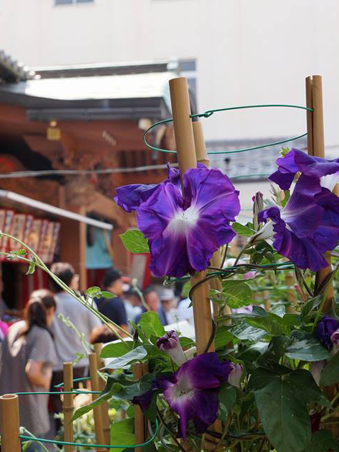

真源寺・入谷鬼子母神 四季→夏 エリア→東京北部

このスポットには
江戸時代の作家・太田南畝の「恐れ入谷の鬼子母神」という洒落で有名なスポット。「下谷七福神」の福禄寿を祀っています。雑司ケ谷の鬼子母神、千葉・下総中山の鬼子母神（法華経寺）と並び「江戸三大鬼子母神」に数えられています。境内と門前で7月に開かれる『朝顔市』は、東京の夏の風物詩。歌川広重や豊国の浮世絵『江戸の花名勝会』にも取り上げられています。昼間はもちろん、夜の通りに朝顔の露店が並ぶ様子も圧巻！（http://tokyo-trip.org/spot/visiting/tk0286/から一部抜粋）
このスポットには
こんな歴史が・・・
4代将軍家綱の代に加賀藩主前田利常公の息女・自昌院殿英心日妙大姉の寄進により建立。朝顔市は江戸時代後期から真源寺境内で朝顔栽培農家が自慢の品を披露したことが始まり。
所在地
東京都台東区下谷1-12-16
最寄り駅
東京メトロ日比谷線入谷駅、JR鶯谷駅